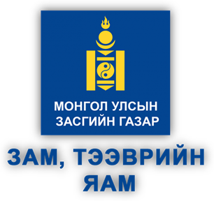
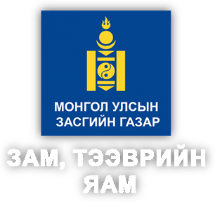

Хяналт шалгалтын мэдээллийн сан
Байгууллагын бүртгэл, эрсдэлийн үнэлгээ, илэрсэн үл нийцэл ба залруулах төлөвлөгөөний хэрэгжилт, гэрчилгээжүүлэлт, хяналт шалгалтын төлөвлөлт.
Нэвтрээгүй тохиолдолд мэдээлэл зөвхөн харагдана. Өгөгдөл өөрчлөгдөхгүй.


Иргэний нисэхийн аюулгүй ажиллагааны хяналт шалгалтын нэгдсэн бүртгэл
Гэрчилгээ эзэмшигч байгууллагын эрсдэлийн профайл, илэрсэн үл нийцэл ба залруулах арга хэмжээний хэрэгжилт, хяналт шалгалтын төлөвлөлтийн мэдээлэл.
Мэдээллийг нэвтрэхгүйгээр үзэх боломжтой. Бүртгэл хөтлөх, өөрчлөх эрхийг нэвтэрсэн ажилтан эдэлнэ.
Байгууллагын бүртгэл, эрсдэлийн үнэлгээ, илэрсэн үл нийцэл ба залруулах төлөвлөгөөний хэрэгжилт, гэрчилгээжүүлэлт, хяналт шалгалтын төлөвлөлт.
Чикагогийн конвенц, аюулгүй ажиллагааны менежмент, гэрчилгээжүүлэлт, хяналт шалгалтын арга зүйн 12 модуль бүхий сургалтын хөтөлбөр.
2026 оны эхний хагас жил · Зам, тээврийн яамны статистикийн мэдээ, 2026 оны 6 дугаар сар
Зун 6–9 дүгээр сард ачаалал хамгийн өндөр байдаг нь аялал жуулчлалын хөдөлгөөнтэй холбоотой. 2026 оны 6 дугаар сард нийт 260.5 мянган зорчигч зорчсон нь өмнөх оны мөн үеэс 4.1%-иар өссөн.
Сөүлийн чиглэл олон улсын зорчигчийн 31.6%-ийг эзэлсээр байна. Хөх хот (+69.6%) ба Хайлаар (+92.9%) чиглэлд хамгийн өндөр өсөлт гарлаа. Эрээн, Шанхай, Сингапурын чиглэл шинээр буюу сэргэн нэмэгдсэн.
Үндэсний тээвэрлэгч “МИАТ” ТӨХК олон улсын зорчигчийн 43.6%-ийг тээвэрлэсэн. Дотоодын бусад тээвэрлэгч (Хүннү Эйр, Аэро Монголиа) нийтдээ 18.3%-ийг эзэлж байна.
Оюутолгойн чиглэл орон нутгийн зорчигчийн 81.6%-ийг эзэлдэг тул тэнд гарсан 7.1%-ийн бууралт салбарын нийт үзүүлэлтэд голлон нөлөөлөв.
Гурван тээвэрлэгч орон нутгийн зорчигчийн 99%-ийг тээвэрлэж байна. Өмнөх оны мөн үеэс “Хүннү Эйр” ХХК-ийн зорчигч 2.8%-иар өссөн бол бусад хоёр тээвэрлэгчийн үзүүлэлт буурсан.
| Үзүүлэлт | 6 дугаар сар | Өссөн дүн | 2026/2025 |
|---|---|---|---|
| Нийт нислэг | 10 490 | 56 989 | +16.5% |
| Олон улсын өнгөрөлтийн нислэг | 7 653 | 44 786 | +19.1% |
| Хөөрөлт, буулт | 2 837 | 12 203 | +7.7% |
| — олон улсын | 1 532 | 7 015 | +11.1% |
| — орон нутгийн | 1 305 | 5 188 | +3.4% |
Монголын агаарын зайг дамжин өнгөрөх нислэг нийт нислэгийн 78.6%-ийг эзэлж, 19.1%-иар өссөн нь салбарын өсөлтийг голлон тодорхойлов.
| Үзүүлэлт | 6 дугаар сар | Өссөн дүн | 2026/2025 |
|---|---|---|---|
| Нийт ачаа, шуудан, тн | 972.2 | 4 677.2 | +1.2% |
| — олон улсад | 967.7 | 4 653.3 | +1.1% |
| — орон нутагт | 4.5 | 23.9 | +13.6% |
| Үүнээс: ачаа | 959.6 | 4 591.8 | +1.4% |
| Үүнээс: шуудан | 12.5 | 85.4 | −11.7% |
| Ачаа эргэлт, мян.тн.км | 3 174.6 | 15 008.3 | +26.7% |
Нийт ачаа, шуудангийн 99.5%-ийг олон улсын тээвэр эзэлж байна. Ачааны биет хэмжээ 1.4%-иар өссөн боловч ачаа эргэлт 26.7%-иар өссөн нь тээврийн зай уртассаныг харуулж байна.
Эх сурвалж: Зам, тээврийн яамны Бодлого, төлөвлөлтийн газар — Мэдээллийн технологи, стандарт, статистикийн хэлтэс. “Зам, тээврийн салбарын статистикийн мэдээ”, 2026 оны 6 дугаар сар (2026.07.20), Хүснэгт 6–10.